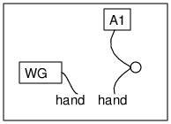

We are made of electrically conducting material (like a solution of salt in water) The skin of our body offers some electrical resistance. With a low voltage signal we can safely demonstrate this.Connect one end of a wire to the wave form generator, other end floating
Connect one end of another wire to A1, the monitoring input
Set WG to 1000 Hz. Join the floating ends of the wire to view the waveform
Now, hold floating end of one wire in one hand and the other in another hand
If you hold the wires tight, the waveform will be displayed just like when a piece of wire is used. Does that mean your body is as good as a wire in conducting electricity. No, think about the current that is flowing. The input impedance of A1 is 1MOhm, means the current flowing is only around 3 micro ampere for the 3 volt signal. A modified form of this setup will allow us to measure the resistance offered by our body.
Again, it depends on whether you are using AC or DC. Body conducts AC better, because the skin that was acting as pure resistor in the case of DC, will act as a dielectric of a capacitor in the case of AC. AC is more fatal for us